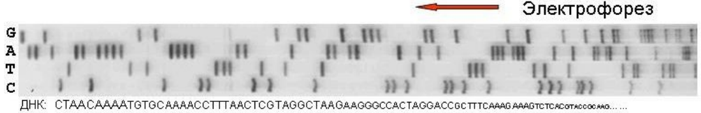

5.5 Анализ последовательностей знаков или событий
Проблема статистического анализа последовательностей возникла, в первую очередь, с появлением быстрых методов секвенирования ДНК, в результате чего объем баз первичных нуклеотидных последовательностей растет экспоненциально. Параллельно интерес к этим методам возник при проведении маркетинговых исследований. Появилось желание выяснить, какова спонтанная траектория передвижения покупателя в торговом центре или в каком порядке пользователь нажимает кнопки и ссылки в Интернет-магазине, когда покупает товар (Горбач, Цейтлин, 2011).
Под последовательностью будем понимать специфическую переменную нечисловой природы, которая представляет собой упорядоченный набор знаков, обозначающих некоторые случайные состояния или события (например, наличие элемента структуры молекулы):

Оказалось, что с последовательностями можно работать почти так же, как и с обыкновенными числами: оценивать их близость, выполнять кластерный анализ, включать в регрессионные модели и проч. Убедимся в этом, рассматривая функции пакета TraMineR (Trajectory Miner in R), разработанного в Женевском университете (Gabadinho et al., 2011).
Пакет TraMineR предоставляет инструментарий для описания, вычисления и графического изображения основных параметров последовательностей (Бирюкова, 2014), в том числе:
- оценки характеристик отдельных последовательностей, таких как длина, время пребывания в каждом из состояний, энтропия и проч.;
- расчета агрегированных характеристик совокупностей: скорости переходов, средней длительности пребывания в каждом состоянии, частоты повторения последовательностей;
- вычисления матрицы попарных различий между последовательностями с использованием разных методов формализации «расстояния» и выделение кластеров;
- статистического анализа различий между группами последовательностей (ANOVA) и построение регрессионных моделей с использованием связанных ковариат;
- графической визуализации последовательностей, их частотных распределений, связей между ними и проч.
Рассмотрим в качестве примера набор данных biofam, который прослеживает семейный статус 2000 швейцарских граждан на протяжении 16 лет их жизни между 15 и 30 годами. В столбцах a15-a30 таблицы данных представлены коды семейного состояния от 0 до 7, имеющие следующий смысл:
| Код | Живет отдельно | Семейный | Есть дети | Разведен | Описание | Метка |
|---|---|---|---|---|---|---|
| 0 | нет | нет | нет | нет | Живет с родителями | Родит |
| 1 | да | нет | нет | нет | Живет отдельно | Отд |
| 2 | нет | да | - | нет | Семья у родителей | Сем+Род |
| 3 | да | да | нет | нет | Семья без детей | Сем. |
| 4 | нет | нет | да | нет | Одиночка с родителями | Один+Род |
| 5 | да | нет | да | нет | Одиночка отдельно | Один+Отд |
| 6 | да | да | да | нет | Семья с детьми | Сем+Дет |
| 7 | - | - | - | да | Разведен | Развод |
Функция seqdef() обеспечит нам создание объекта stslist, включающего последовательности с необходимыми метками. Первое, что может представить интерес - это визуализация 10 наиболее часто встречающихся последовательностей и частотного распределения семейного статуса по мере взросления молодых людей:
library(TraMineR)
data(biofam)summary(biofam) # Результаты не приводятсяbiofam.lab <- c("Родит", "Отд", "Сем+Род",
"Сем.", "Один+Род", "Один+Отд", "Сем+Дет", "Развод")
biofam.seq <- seqdef(biofam[, 10:25], labels = biofam.lab)
par(mfrow = c(2, 2))
seqiplot(biofam.seq, withlegend = FALSE, title = "(a)")
seqdplot(biofam.seq, withlegend = FALSE, title = "(б)")
seqfplot(biofam.seq, withlegend = FALSE, title = "(в)")
seqlegend(biofam.seq)Рисунок 5.8: Визуализация 10 первых (а), наиболее часто встречающихся последовательностей (б), и график частотного распределения градаций (в)
В этом наборе данных содержится также ряд дополнительных показателей об анкетируемых респондентах: пол (sex), год рождения от 1909 до 1957 г. (birthyr), национальность (nat_1_02), родной язык (plingu02), религиозность (p02r01, p02r04), профессиональный статус отца и матери (cspfaj, cspmoj). С использованием семейства функций seq*plot() можно визуализировать данные с разбивкой по группам. Например, можно сделать группировку по полу и установить, что только 20% 25-летних швейцарских девушек продолжают жить с родителями, тогда как таких юношей - более 33% (рис. 5.9):
seqdplot(biofam.seq, group = biofam$sex, withlegend = FALSE)Рисунок 5.9: График частотного распределения градаций с группировкой по полу
Для набора исходных данных можно оценить два вида энтропии Шеннона. Вертикальная, или “кросс-cекторальная” энтропия рассчитывается на основе распределения состояний в каждый момент времени для всех анализируемых последовательностей (рис. 5.10):
seqHtplot(biofam.seq)Рисунок 5.10: Изменение относительной энтропии семейного состояния в течение ХХ века
Очевидно, что в 15 лет все респонденты находятся в одном и том же состоянии - проживают в доме родителей и энтропия равна 0. Возраст от 24 до 27 лет связан с активной сменой семейного статуса.
Для каждой из последовательностей можно рассчитать набор разнообразных метрик, таких как длина, число подпоследовательностей (number of subsequences) или различных состояний (distinct states), длина пребывания в стабильном состоянии (durations) и число внутренних переходов (transitions). Важной обобщенной мерой нестабильности последовательности является ее горизонтальная энтропия (longitudinal, или within-sequence entropy). В нормированном выражении она принимает значение 0, если последовательность состоит из одинаковых состояний, и 1, если каждое состояние из общего словаря встречается с равной вероятностью (в нашем примере каждый из 8 кодов семейного состояния встречается точно два раза).
Рассмотрим, как изменяется средняя энтропия последовательностей за исторический период середины ХХ века:
Entropy <- seqient(biofam.seq)
ageg <- cut(biofam$birthy, c(1909, 1918, 1928, 1938, 1948, 1958),
label = c("1909-18", "1919-28", "1929-38", "1939-48", "1949-58"),
include.lowest = TRUE)
boxplot(Entropy ~ ageg, data = biofam,
xlab = "Диапазон годов рождения",
ylab = "Энтропия последовательностей", col = "cyan")Рисунок 5.11: Изменение относительной энтропии по градациям возрастов
Дотошный аналитик наверняка сможет усмотреть на рис. 5.11, что молодые швейцарцы 70-80-х годов существенно активнее меняли свой семейный статус, чем в 30-40 годы.
Индекс сложности (complexity) последовательности рассчитывается как геометрическое среднее энтропии и числа внутренних переходов, отнесенных к их максимальным значениям. По еще более сложным формулам, учитывающим длины фрагментов с постоянным состоянием и разнообразие переходов, рассчитывается мера турбулентности (turbulence). Достоинства и недостатки отдельных индексов постоянно дискутируются (Gabadinho et al., 2011а), поэтому интересно проследить зависимость между ними и убедиться в том, что каждый индекс характеризует последовательность несколько по-разному (рис. 5.12):
Turbulence <- seqST(biofam.seq)
plot(Turbulence, Entropy, xlab = "Турбулентность", ylab = "Энтропия")Рисунок 5.12: Зависимость энтропии от турбулентности
Поскольку любой из этих индексов является численной характеристикой последовательности, они могут использоваться как компоненты обычных линейных моделей:
m.turb <- lm(Turbulence ~ sex + birthyr, data = biofam)
summary(m.turb)##
## Call:
## lm(formula = Turbulence ~ sex + birthyr, data = biofam)
##
## Residuals:
## Min 1Q Median 3Q Max
## -4.3805 -1.0330 0.1133 1.3323 3.9374
##
## Coefficients:
## Estimate Std. Error t value Pr(>|t|)
## (Intercept) -50.534580 7.355288 -6.871 8.52e-12 ***
## sexwoman 0.373527 0.079528 4.697 2.82e-06 ***
## birthyr 0.028381 0.003786 7.495 9.88e-14 ***
## ---
## Signif. codes: 0 '***' 0.001 '**' 0.01 '*' 0.05 '.' 0.1 ' ' 1
##
## Residual standard error: 1.771 on 1997 degrees of freedom
## Multiple R-squared: 0.03796, Adjusted R-squared: 0.037
## F-statistic: 39.4 on 2 and 1997 DF, p-value: < 2.2e-16Нетрудно сделать вывод, что турбулентность семейной жизни статистически значимо выше у женщин и увеличивается по мере приближения к ХХI веку.
Основная проблема анализа последовательностей - как формализовать различия между двумя произвольными последовательностями и выразить их в виде численной метрики - дистанции \(D\)? Описанные выше обобщенные показатели сложности тут непригодны, и обычно используют несколько подходов:
- Вычисление расстояния по Хеммингу, или числа несовпадающих позиций (nomatching positions).
- Выделение длины совпадающей части с начала последовательности \(S_p\) (LCP, Longest Common Prefix, \(D_p = 1 - S_p\)) или максимальной длины общей подпоследовательности (LCS, Longest Common Subsequence).
- Оценка метрики Левенштайна (Горбач, Цейтлин, 2011), т.е. суммарной “стоимости” преобразования одной последовательности в другую.
В общем случае операциям редактирования, используемым в преобразовании по п. 3, можно назначить разную “стоимость”, а именно, вставке события \(\mathbf{a}\), его удалению или замене \(\mathbf{a} \rightarrow \mathbf{b}\) (что также интерпретируется как “удаление \(\mathbf{b}\) - вставка \(\mathbf{a}\)”). В пакете TraMineR функция seqsubm() с использованием method = "TRATE" выполняет оценку матрицы стоимостей переходов от \(\mathbf{a}\) к \(\mathbf{b}\), а другая функция - seqdist() - с использованием этих коэффициентов рассчитывает матрицу дистанций “оптимального” редактирования (OM, optimal matching distances) между каждой парой взятых в анализ последовательностей:
couts <- seqsubm(biofam.seq, method = "TRATE")
biofam.om <- seqdist(biofam.seq, method = "OM",
indel = 3, sm = couts)
round(biofam.om[1:10, 1:10], 1)## [,1] [,2] [,3] [,4] [,5] [,6] [,7] [,8] [,9] [,10]
## [1,] 0.0 21.3 11.6 21.6 15.6 13.9 13.9 15.1 4.0 19.3
## [2,] 21.3 0.0 15.4 17.6 11.7 29.4 29.5 13.3 21.3 7.7
## [3,] 11.6 15.4 0.0 11.7 5.8 17.7 17.8 5.7 11.6 21.4
## [4,] 21.6 17.6 11.7 0.0 5.9 21.4 21.8 11.6 21.6 23.6
## [5,] 15.6 11.7 5.8 5.9 0.0 21.5 21.7 7.6 15.6 17.6
## [6,] 13.9 29.4 17.7 21.4 21.5 0.0 13.9 19.6 9.9 31.4
## [7,] 13.9 29.5 17.8 21.8 21.7 13.9 0.0 19.8 13.9 31.4
## [8,] 15.1 13.3 5.7 11.6 7.6 19.6 19.8 0.0 15.1 21.0
## [9,] 4.0 21.3 11.6 21.6 15.6 9.9 13.9 15.1 0.0 21.5
## [10,] 19.3 7.7 21.4 23.6 17.6 31.4 31.4 21.0 21.5 0.0Мы привели таблицу парных расстояний между первыми 10 последовательностями, и читатель может сопоставить ее с результатом их визуализации на рис. рис. 5.8a. Отметим, что для расчета матрицы размерностью 2000 x 2000 и объемом 30 Мб на стандартном компьютере понадобилось меньше 1 сек.
Рассчитанная матрица дистанций может быть использована для построения кластеров последовательностей с применением любой пригодной функции R из других профильных пакетов. Не останавливаясь на ассортименте и специфике применения методов кластеризации, о чем речь пойдет в главе 10, осуществим построение иерархической дендрограммы по алгоритму Уорда. Используем функцию agnes(), на вход которой подается рассчитанная выше матрица расстояний:
library(cluster)
clusterward <- agnes(biofam.om, diss = TRUE, method = "ward")
plot(clusterward, which.plots = 2)Рисунок 5.13: Иерархическая кластеризация последовательностей по методу Уорда
Анализ результатов кластеризации мы можем продолжить с использованием функций seqdplot() или seqmtplot(), чтобы оценить, например, простое распределение частот семейных состояний по группам, выбранным по тому или иному уровню рассечения дендрограммы (рис. 5.14):
# "Распилим" дерево на три части
cluster3 <- cutree(clusterward, k = 3)
cluster3 <- factor(cluster3,
labels = c("Кластер 1", "Кластер 2", "Кластер 3"))
table(cluster3)## cluster3
## Кластер 1 Кластер 2 Кластер 3
## 472 502 1026par(mfrow = c(2, 2))
seqmtplot(biofam.seq, group = cluster3)Рисунок 5.14: Распределение частот семейных состояний по выделенным кластерам
Матрица расстояний между последовательностями может быть использована для непараметрического дисперсионного анализа по методу Андерсона (Anderson, 2001), подробному описанию сущности которого посвящен раздел 9.3. В общих чертах, алгоритм осуществляет разложение многомерной дисперсии, заключенной в матрице расстояний, на общую \(SST\) и внутригрупповую \(SSW\) суммы квадратов расстояний \(d_{ij}\), где группировка задается в соответствии с уровнями изучаемых факторов. Пакет TraMineR включает несколько эффективно работающих функций непараметрического ANOVA, которые с успехом могут использоваться в любом анализе произвольных матриц дистанций.
Функция dissassoc() оценивает зависимость между степенью изменчивости элементов матрицы парных расстояний и дискретной ковариатой (номинальной переменной). Рассчитываются обычные компоненты таблицы дисперсионного анализа (суммы квадратов и их средние по числу степеней свободы), дисперсионное отношение \(F\) и коэффициент детерминации \(R^2\). Функция выполняет также тест на однородность дисперсий в выделенных группах с использованием статистик Левене (Levene) и Бартлетта (Bartlett). Статистическая значимость тестов оценивается путем рандомизации (т.е. элементы матрицы дистанций случайным образом перемешиваются R раз относительно уровней фактора).
Оценим, как влияет пол респондента (sex) на взаимные расстояния между последовательностями:
dissvar(biofam.om) # Общая дисперсия парных расстояний## [1] 8.312819da <- dissassoc(biofam.om, group = biofam$sex, R = 1000)
print(da)## Pseudo ANOVA table:
## SS df MSE
## Exp 169.1489 1 169.148898
## Res 16456.4883 1998 8.236481
## Total 16625.6372 1999 8.316977
##
## Test values (p-values based on 1000 permutation):
## t0 p.value
## Pseudo F 20.53655013 0.001
## Pseudo Fbf 20.77949020 0.001
## Pseudo R2 0.01017398 0.001
## Bartlett 3.37903015 0.001
## Levene 62.60262292 0.001
##
## Inconclusive intervals:
## 0.00383 < 0.01 < 0.0162
## 0.03649 < 0.05 < 0.0635
##
## Discrepancy per level:
## n discrepancy
## man 908 7.705633
## woman 1092 8.662796
## Total 2000 8.312819Из результатов следует, что межгрупповая вариация MSE Exp статистически значимо превышает остаточную вариацию MSE Res, а величина псевдо-\(R^2\) значимо больше нуля.
Функция dissmfac() является, в некотором смысле, обобщением dissassoc() для оценивания линейных вкладов нескольких объясняющих переменных, задаваемых формулой:
dlm <- dissmfac(biofam.om ~ sex + ageg, data = biofam, R = 100)Очевидно, что оба фактора - пол и год рождения, - значимо влияют на вариацию расстояний между последовательностями, т.е. среднее внутригрупповое расстояние существенно меньше общей средней дистанции.
Наконец, функция disstree() осуществляет рекурсивное построение дерева решений. На каждом последовательном шаге выбирается уровень заданного фактора и матрица дистанций разбивается на блоки, обеспечивая при этом уменьшение внутригрупповых расстояний Чтобы получить изображение дерева на диаграмме, необходимо установить пакет DiagrammeR:
disstree(biofam.om ~ sex + birthyr, data = biofam, R = 100)## Dissimilarity tree:
## Parameters: minSize=100, maxdepth=5, R=100, pval=0.01
## Formula: biofam.om ~ sex + birthyr
## Global R2: 0.03517
##
## Fitted tree:
##
## |-- Root (n: 2000 disc: 8.3128)
## |-> birthyr 0.014749
## |-- <= 1940 (n: 773 disc: 7.7673)
## |-> birthyr 0.011076
## |-- <= 1928 (n: 229 disc: 7.2023)[376] *
## |-- > 1928 (n: 544 disc: 7.8828)
## |-> sex 0.0082047
## |-- [ man ] (n: 263 disc: 7.381)[1638] *
## |-- [ woman ] (n: 281 disc: 8.2274)[636] *
## |-- > 1940 (n: 1227 disc: 8.4567)
## |-> sex 0.013006
## |-- [ man ] (n: 549 disc: 7.8792)
## |-> birthyr 0.012191
## |-- <= 1951 (n: 330 disc: 7.9669)[644] *
## |-- > 1951 (n: 219 disc: 7.5061)[886] *
## |-- [ woman ] (n: 678 disc: 8.7252)
## |-> birthyr 0.0084755
## |-- <= 1946 (n: 204 disc: 8.5457)[1021] *
## |-- > 1946 (n: 474 disc: 8.6967)[516] *